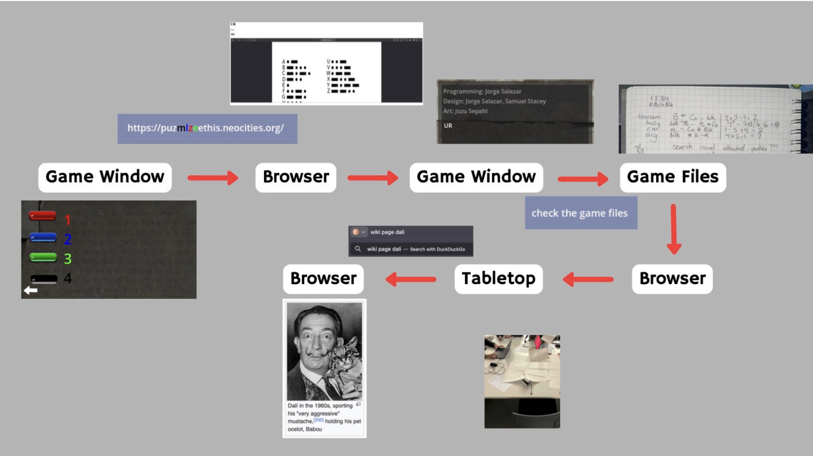

A first iteration on that draft. I got feedback that I could make the project's structure even more open, and I was struck with the inspiration that led to the project in its current state.
Development Timeline
This project began as a linear, non-narrative puzzle game whose goal was to lead the player out of the game window and into various other media through the puzzle system.

We took inspiration from how The Witness prompts the player to take clues from the game environment, stepping outside what they originally assume is part of the game's puzzle rules. In our original playtest, we ran the game for around 8 in-person playtesters and 2 online playtesters.
Tutorial Game
This was my original design intention - each level was to teach the player a little more about the mechanics, building on the last, so at the end they would be understand that the answer is always those colors, in that order, and then they would be set up to solve the rest of the puzzles.
The text in parentheses kind of explains what the level was supposed to teach. Also the model for this way of teaching the player was still The Witness.
LV3 that says "maybe cut this one" did get cut, I never made the level but I assume nobody would have understood it because even when I looked at this document recently after 6 months I had no idea what it was supposed to teach. The player never has to type multiple words anywhere else in the game so it makes 0 sense.
Before I redesigned the entire project I zeroed in on just these puzzles. Since this section was meant to teach the player how to solve every other puzzle in the game, I did a lot of playtesting and made a lot of small tweaks with the goal of every playtester beating it in under 5 minutes with no hints.
One of the first things about the old version that I realized I had to change was that I had coded it not to accept double clicks. I had also coded it so the letter hints were given one letter at a time, meaning the player had to remember all the letters as well as remembering the order of the colors. To fix these I decided it would be faster to just remake the game, so I spent a couple hours making a cleaned-up version with assets we already had from the old one.
From there, a lot of what I gradually realized was that there were issues with the puzzle feedback. I compared them to the puzzles in The Witness and realized that I wasn't giving my players a visible fail state. A later playtester mentioned something about a puzzle "making me type the answer multiple times," which made me realize I also ought to put a clear success state, since they were interpreting a failure as the game asking for the same answer again and again.
Unscrambling Letters Clue
The idea behind this puzzle didn't change, it's very straightforward. For the new version I put the clue at the chronological end of the blog posts to incentivize the player to read through all of them.
People struggled a lot with the old video. About 80% of playtesters needed some kind of hint to solve it. In this original video I separated the words with stock footage and didn't separate between the letters with anything but the different color.
The new video changed several things. To fit the new puzzle format, I made the title of the video the character ꩜ and trimmed the clue to be only one word. Another change was the wording of "left hand" and "right hand," all playtesters who were not native English speakers (and some who were) found themselves thrown off by that phrasing. In my first playtest of the new version, I didn't have the paper footage, and my playtester was struggling to figure out what the video was referring to by "paper." I decided to add the footage of paper to suggest that the player use pen and paper without outright telling them. I also remembered that some people testing the old version hadn't realized that you were meant to draw all the letters on different sheets of paper, so I took the opportunity to add little clips of turning the paper over, which would also give the player an opportunity to pause the video and grab a new sheet of paper.